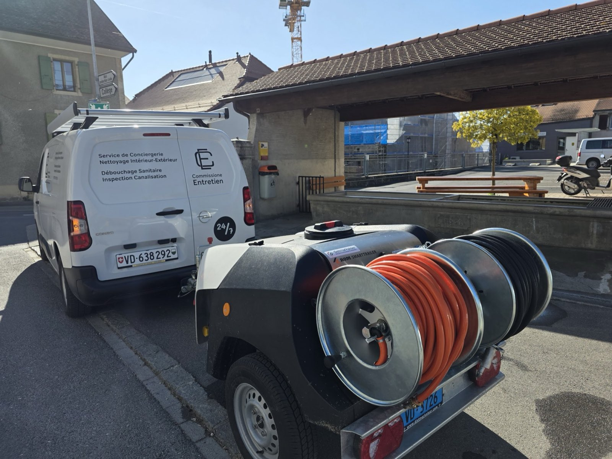
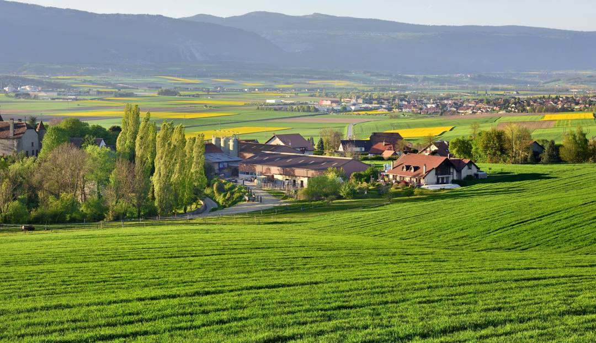
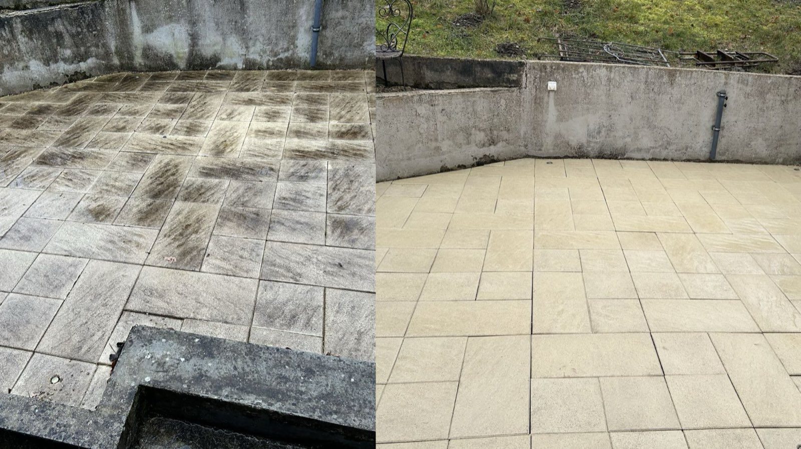

24h/24 — 7j/7

Canalisations
Débouchage d'urgence, curage haute et basse pression, inspection par caméra endoscopique, pose et réfection de conduites.
- Débouchage d'urgence
- Curage préventif
- Inspection caméra
- Pose de conduites

Bavois — intervention 24h/24, 7j/7
Entreprise familiale basée à Bavois. Un seul interlocuteur pour l'entretien de votre bâtiment.
nos prestations
Canalisations, surfaces extérieures, intérieurs, panneaux photovoltaïques, parties communes : nous couvrons l'entretien d'un bâtiment de bout en bout, dans tout le canton de Vaud.
24h/24 — 7j/7

Débouchage d'urgence, curage haute et basse pression, inspection par caméra endoscopique, pose et réfection de conduites.
Sans accès au toit

Poussière, pollen et dépôts font chuter le rendement de vos panneaux. Nettoyage à la perche télescopique, à l'eau déminéralisée, sans produit chimique.
Privés & régies

Terrasses, façades, allées, mobilier de jardin, intérieurs, et entretien régulier des parties communes pour les régies et les copropriétés.
Notre activité ne se limite pas à ces trois pages. Si votre besoin n'apparaît pas ici, appelez-nous : nous vous dirons franchement si nous savons le faire.
urgence — 24h/24, 7j/7
Nous répondons jour et nuit, week-ends et jours fériés, sur l'ensemble du canton de Vaud. Un appel suffit pour déclencher une intervention.
comment ça se passe
Une méthode identique sur chaque chantier, que ce soit un évier bouché un dimanche soir ou un contrat d'entretien annuel pour une régie.
01
Vous nous joignez au 077 521 73 28, à toute heure. Nous cernons le problème et la localisation avant de nous déplacer.
02
Nous identifions la nature et la position exacte du blocage — au besoin à la caméra endoscopique, sans rien casser.
03
Machine électromécanique, furet ou hydrocurage haute pression : l'outil est choisi selon le diamètre et l'état de la conduite.
04
Pour une inspection, un rapport écrit vous est remis avec les réparations à prévoir. Aucun travaux inutile.
sur le terrain
Cliquez sur une photo pour l'agrandir.
qui sommes-nous
Commissione Entretien est une entreprise familiale basée à Bavois, au cœur du canton de Vaud. Fondée par Lorenzo Commissione, elle intervient sur l'ensemble du canton pour l'entretien des canalisations, le nettoyage et la conciergerie.
Nos véhicules et notre matériel — remorque d'hydrocurage, caméra d'inspection, machines électromécaniques, perche télescopique — sont dimensionnés pour traiter aussi bien un évier bouché qu'un réseau d'immeuble complet.
Chaque intervention est menée avec méthode, savoir-faire et respect de votre propriété.
Un résultat durable plutôt qu'un dépannage temporaire. Le travail bien fait, c'est notre signature.
Disponibilité 24h/24 pour les urgences, délais tenus pour les interventions planifiées.
Une entreprise vaudoise : vous savez toujours à qui vous avez affaire.
zone d'intervention
Basés à Bavois, nous nous déplaçons rapidement de Lausanne à Yverdon-les-Bains, de Nyon à Payerne, ainsi que dans l'ensemble des communes environnantes.
questions fréquentes
Oui. Les urgences de canalisation sont prises en charge 24h/24 et 7j/7, week-ends et jours fériés compris, sur l'ensemble du canton de Vaud. Un seul numéro : 077 521 73 28.
Nous sommes basés à Bavois et intervenons dans tout le canton : Orbe, Yverdon-les-Bains, Chavornay, La Sarraz, Cossonay, Échallens, Lausanne, Renens, Prilly, Morges, Nyon, Payerne, Moudon, Vallorbe et les communes environnantes.
Le devis est gratuit et sans engagement. Le montant dépend de la nature du blocage, de sa localisation et de la technique nécessaire — machine électromécanique, furet ou hydrocurage haute pression. Nous annonçons le cadre tarifaire avant d'intervenir.
Non. Notre caméra endoscopique haute résolution permet un examen non destructif de la conduite : fissures, racines, affaissements et obstructions sont localisés sans creuser à l'aveugle. Un rapport écrit vous est remis après l'inspection.
Non. Nous travaillons exclusivement à la perche télescopique, depuis le sol ou une plateforme stable, à l'eau déminéralisée et sans produit chimique. Aucun risque de casse de tuile ni de dommage à l'installation.
Oui. Nous assurons l'entretien régulier des parties communes pour les régies, gérances et copropriétés, avec des contrats d'entretien adaptables : la fréquence des passages est ajustée à la taille et aux besoins de l'immeuble.
contact
Disponible 24h/24 et 7j/7 pour toutes les urgences. Devis gratuit et sans engagement pour les interventions planifiées.
{kind=link}
{kind=link}
{kind=link}
{kind=link}
{kind=link}
{kind=link}